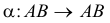
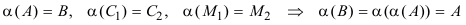
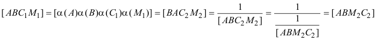
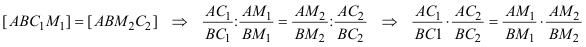
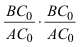
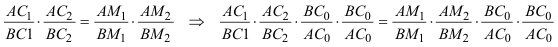
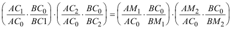
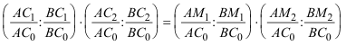
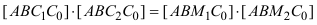

|
Teorema de Desargues (Cónicas), (Ver problema 280) Cuando un cuadrilátero está inscrito a una cónica, una transversal r cualquiera encuentra a los dos pares de lados opuestos y a la cónica en tres pares de puntos homólogos en una involución de la recta r. Expresión en razones dobles: Sea AB=r y sea la involución   En la involución se conservan las razones dobles  desrrollando tenemos Introducimos ahora una recta transversal auxiliar d que corta a AB en C0; y multiplicando y dividiendo por  nos queda que ordenado convenientemente queda como  e invirtiendo dentro de los parentesis  que es un producto de razones dobles  |